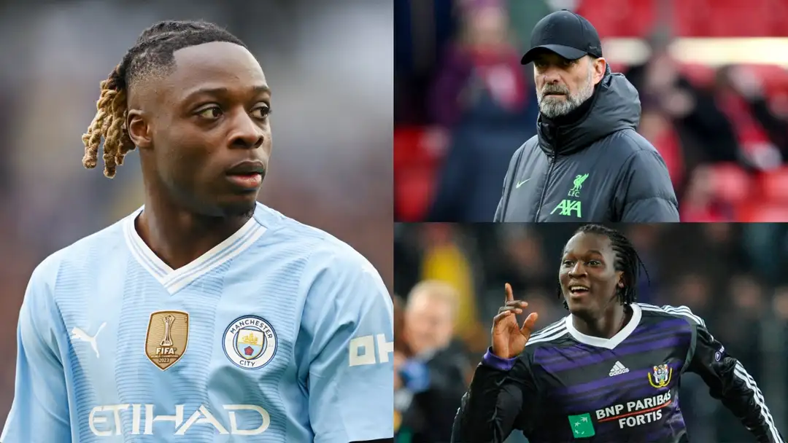

Explained: How Romelu Lukaku kept Liverpool from making Man City star Jeremy Doku their Sadio Mane replacement
Jurgen Klopp & Co. pulled out all the stops to convince the Belgian to move to Anfield as a teenager but it was all in vain
Arsenal, Manchester City, Chelsea, Ajax and PSV - so many of Europe's top clubs wanted to sign Jeremy Doku from Anderlecht when he was still only 15 - but nobody rolled out the red carpet quite like Liverpool.
"Steven Gerrard showed us videos with tactical analysis," Doku's father David later revealed to Het Nieuwsblad. "At the training complex [Simon] Mignolet, [Sadio] Mane and [Georginio] Wijnaldum came to talk to us. How we were received there... damn!"
Liverpool's intense interest in Doku was understandable. As a lightning-quick winger blessed with devastating dribbling skills, the Belgian was already deemed destined for greatness. Anderlecht were, thus, terrified by the prospect of losing one of their most exciting-ever academy products for a minimal fee before he had even made his first-team debut.